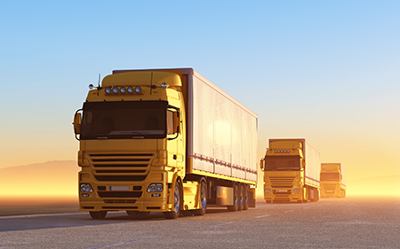

Road transportation involves the movement of goods and people using vehicles on roads, providing flexibility and accessibility.

Water transportation relies on ships and boats to move goods and passengers across bodies of water.

Air transportation enables fast travel over long distances using aircraft.